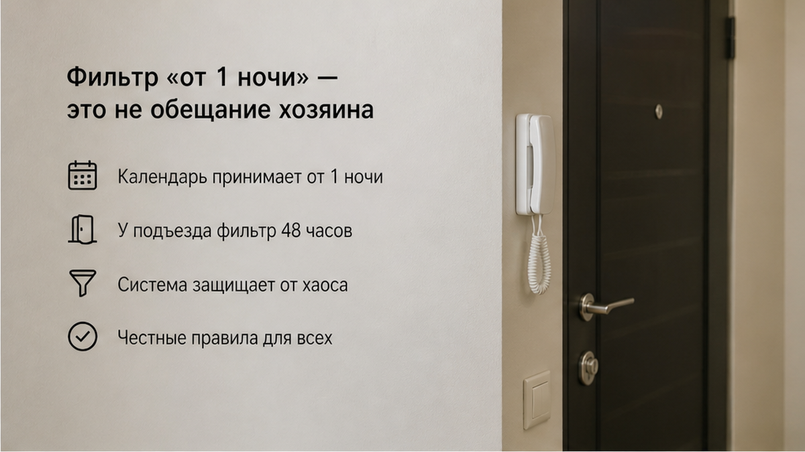
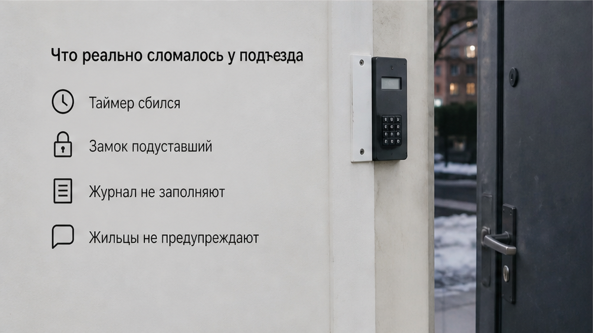
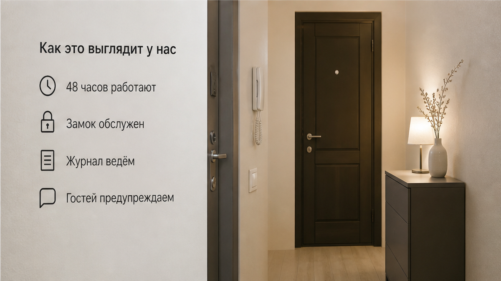

«Минимум две ночи. Или оплачиваете вторую плюс уборку» — это гость услышал не в переписке и не на сайте, а в домофон, стоя у подъезда с чемоданом. Одну ночь он уже оплатил — около 5 000 ₽, по объявлению, где стоял фильтр «от 1 ночи». Таксист уехал, ключей в руке нет, а голос в трубке спокойно объясняет правила, которых в объявлении не было.
Дальше у гостя два варианта, и оба плохие. Либо доплатить за вторую ночь, которая ему не нужна, и уборку, которую он не заказывал, — итого почти 9 000 ₽ за один сон. Либо разворачиваться и искать что-то ещё, с чемоданом, вечером, в чужом городе, без гарантии, что деньги за первую ночь вернут.
Я хост посуточной в Тюмени. Это «Добрый дом».

Кажется, что галочка на сайте бронирования — это уже договор. Что если система пустила вас оплатить одну ночь, значит одну ночь вам и продали. Это не договор. Это настройка в карточке объекта, которую хозяин может поставить как удобно ему, а потом «уточнить» голосом.
Механика у таких историй почти всегда одна. Квартира живёт на длинных заездах: три ночи, неделя, вахта. Одна ночь для хозяина — это полный цикл работы за треть денег: комплект белья в стирку, санузел, кухня, вынос мусора, клининг. Поэтому фильтр стоит «от 1 ночи» — чтобы объявление попадало в выдачу и собирало просмотры, — а на заселении включается реальное правило. Гость в этой схеме не обманут «на бумаге». Он просто узнаёт цену слишком поздно, чтобы отказаться.
И вот тут ломается не деньги. Ломается то, зачем человек вообще бронировал: приехать и лечь спать. Мы про этот момент писали отдельно — в карточке одна цена, на оплате — другая.

Разберём по шагам, потому что тут важна последовательность, а не эмоция.
Первое: оплата прошла раньше, чем прозвучали правила. Гость отдал деньги за то, что ему ещё не подтвердили словами. Второе: заселение шло через домофон, а не через человека, который отвечает за объект. Третье: у гостя не было второго варианта. Такси ушло, соседние квартиры на эту ночь уже разобраны, а переносить не на что — он приехал на одну ночь по делу.
Любой из этих трёх пунктов по отдельности переживается. Все три вместе — это уже не «неудобно», это заложник. Гость доплачивает не потому, что согласен, а потому, что ему некуда идти.
Мы у себя это называем просто: правило, которое всплывает на пороге, — это не правило, это рычаг.

У нас на одну ночь заселяют. Не «в исключительных случаях», не «если повезёт с окном между заездами» — просто заселяют, и цена одной ночи названа до оплаты, вместе с уборкой, если она входит.
Нет. Так не заселяем.
Я про схему «сначала деньги, потом правила». Если минимум по объекту действительно две ночи — это написано в объявлении и сказано в переписке до брони, а не в домофон. Если гостю нужна одна ночь, а объект её не держит, мы говорим это сразу и предлагаем другой вариант. Потерять бронь на этапе диалога — нормально. Потерять гостя, который стоит у подъезда с чемоданом, — нет.
Второе: заселяет человек. Не только код и не только трубка. Гостя встречают, показывают квартиру, отдают ключи и сразу говорят, что входит в цену — комплект белья, вода, полотенца, уборка. Про то, как это устроено, есть отдельный разбор: PDF на три страницы — и чужой подъезд.
Третье: уборка. Она не появляется отдельной строкой на пороге. Она либо в цене, либо названа цифрой заранее — когда в фильтре одно, а у двери — другое. Доплата, о которой гость узнаёт в момент, когда уже не может уйти, — это не уборка. Это наценка за безвыходность.
Вопрос к вам, и мне правда интересно: вы бы доплатили за вторую ночь и уборку — или развернулись и уехали искать другое, зная, что 5 000 ₽ могут и не вернуть? Напишите в Telegram @Dobriy_dom_72 или в MAX. Я читаю и отвечаю сам.
Наш вывод простой. Гость платит не за квадратные метры, а за предсказуемость. Он отдал деньги, чтобы снять с себя один вопрос — «где я сегодня сплю». Если этот вопрос возвращается к нему у подъезда, объект не выполнил свою работу, даже если внутри чисто и красиво.
Поэтому проверка суточной квартиры делается не по фото. Она делается по одному критерию: всё ли названо цифрой до того, как вы отдали деньги. Если до оплаты вам не сказали срок, цену уборки и кто именно вас встречает, — вы бронируете не ночь, а разговор в домофон. Разбор остальных красных флагов — когда после предоплаты в чате тишина.
Короткий чеклист перед оплатой:
Telegram https://t.me/Dobriy_dom_72 · MAX https://max.ru/id660300569233_biz · бронь https://добрыйдом-72.рф/ и /booking/ · тел. +7 993 574-83-22 · менеджер https://t.me/Dobriy_dom_Tyumen